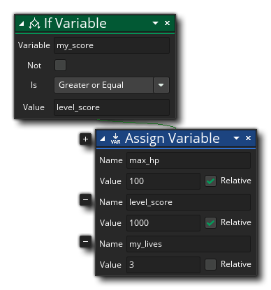

描述
此动作用于将一个值赋给一个变量（此值在之前的程序创建过），或改变一个已经存在的变量的值。. 你需要给出变量的名称和值，此值可以和初始值相关联 。如果你给出的是一个新变量的名称（也就是说此实例中的这个变量在之前从未被赋值），那么这将创建一个新变量，并将你给出的值赋给它。如果你给出的是一个已存在的变量的名称，那么它将仅仅改变变量的值。注意当选中 相关联 将会为原来的数值型的值加上一个新值（使用负数来表示减去，也就是四则运算）。你也可以用 表达式 或之前创建的变量来作为值。不选中将会覆盖原来的值。
值得注意的是当我们谈论“值”时，我们不仅是说数学上的值，而是包括字符串，指针，资源ID，或其他任何函数可以使用或返回的值。如果值是字符串的形式，那么选中 相关联将会在之前的值后添加一个值。例如之前的变量是“我是刺客”，然后为这个变量增添一个新值“莫得感情”，并且选中了“相关联”.那么最终这个变量的值将会是“我是刺客莫得感情”。你必须注意新值和原来的值必须要有相同的 数据类型，如果你打算将一个字符串添加进一个整数型，那么会导致编译错误。
注意你可以点击
加号图标来多次执行此动作，你需要给出新的变量名和需要赋给的值。有关详细信息，请看变量和全局变量。
动作语法：

参数：
参数 描述 名称 将要被赋值的变量 值 将要被赋给的值 相关联 选中使新值和原来的值相关联。
例如：
上述动作代码块将会检查两个实例变量中是否是一个比另一个高( 如果 "my_score" 比 "level_score"大)，然后它将新值赋给实例变量。